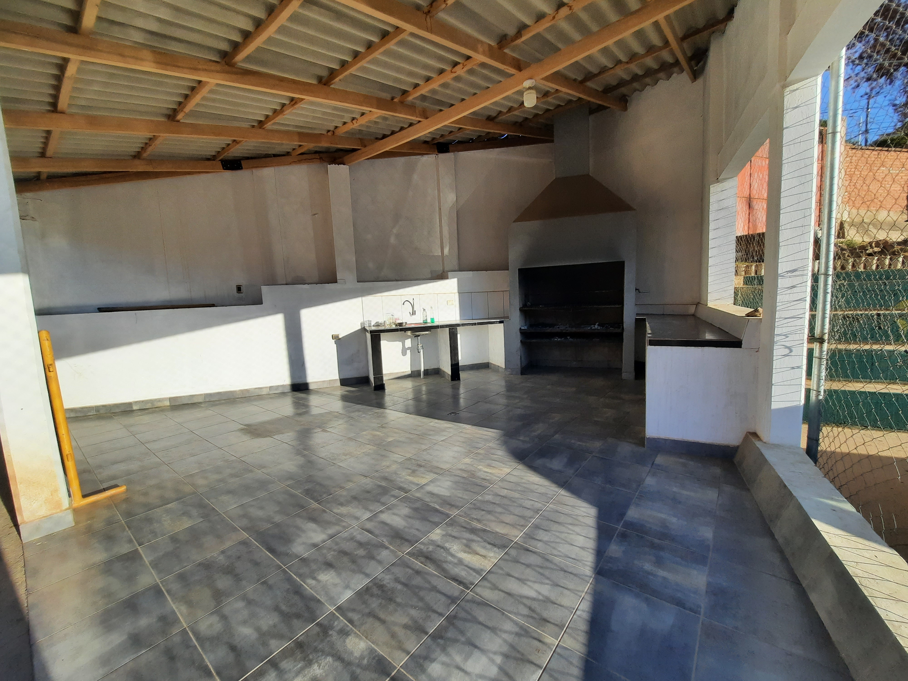
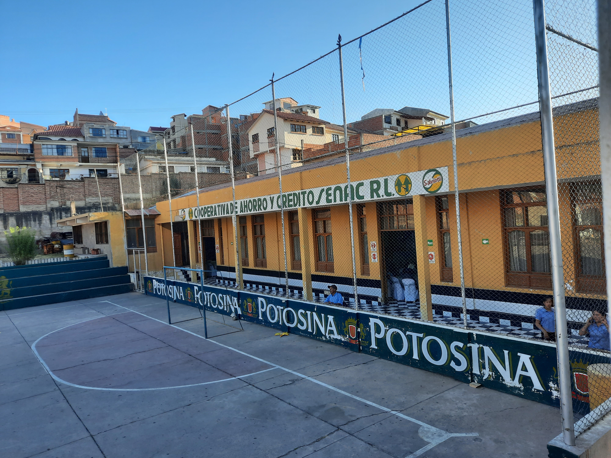
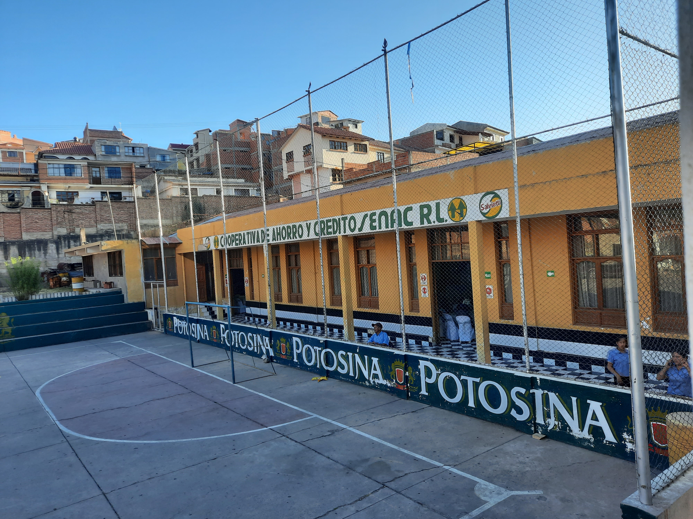

SERVICIOS
El Complejo SENAC te ofrece las siguientes canchas...
El Complejo SENAC cuenta con una cancha de futsal al aire libre, con piso de cemento y reflectores de luz. Se puede alquilar la cancha como parqueo en caso de eventos, cancha de Volley Ball, espacio para el ensayo de fraternidades, entre otros.
El Complejo SENAC cuenta con una cancha de Wally que al mismo tiempo puede ser utilizada para jugar Raquet, con un mirador en la parte superior donde se puede disfrutar de los partidos.
El Complejo SENAC cuenta con un amplio salón de eventos acompañado de un escenario para grupos musicales o amplificación, más camerinos interiores para los músicos.
El alquiler del salón de eventos incluye baños para hombres y mujeres, dos cocinas equipadas, un depósito para las pertenencias del cliente y estacionamiento para los vehículos.
El salón de eventos es apto para cualquier tipo de eventos sociales como matrimonios, cumpleaños, bautizos, fiesta de quinceañeras, fiestas de colación, reuniones o fiestas de fraternidades o colegios.
El Complejo SENAC cuenta con una amplia churrasquera, equipada con mesones, lavaplatos, freezer, refrigerador y la parrilla de acero inoxidable, además de un espacio para mesas y sillas.



El Complejo SENAC cuenta con un espacio donde puedes dejar tu vehículo de forma segura, de igual manera la cancha de Futsal puede ser utilizada como parqueo en caso haya un acontecimiento social en el salón de eventos.


 
